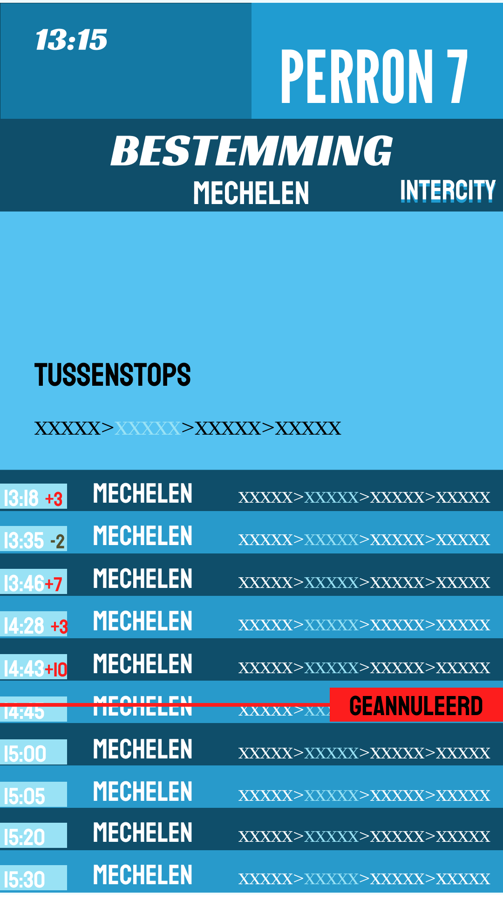

Fakashchuk Diana 1GDM2
Week 2
Introductie en schetsen
In week 2 heb ik verder gewerkt aan mijn ontwerp in Figma. Ik heb mijn schetsen van papier omgezet naar digitale schermen. Daarbij heb ik gelet op een duidelijke indeling, zodat de informatie snel leesbaar is voor gebruikers. Ook heb ik nagedacht over hoe reizigers in één oogopslag kunnen zien waar ze moeten zijn en wat belangrijk is.
Overzichtsscherm


Overzichtsscherm Figma
Voor deze opdracht heb ik een schets van een overzichtsscherm gemaakt voor een stationsomgeving. Op dit scherm wordt een lijst met treinen getoond met belangrijke informatie zoals vertrektijd, treinnummer, bestemming, perronnummer en status.
Ik heb gekozen voor een duidelijke en overzichtelijke indeling, zodat reizigers snel kunnen zien welke trein ze nodig hebben. De status van de trein wordt extra benadrukt met kleur, zodat in één oogopslag duidelijk is of een trein op tijd, vertraagd of geannuleerd is.
Het doel van deze schets is om reizigers snel en eenvoudig te informeren en hen te helpen zich beter te oriënteren op het station. Deze schets vormt de basis voor een verdere digitale uitwerking in een later stadium.
Perronscherm

Perronscherm Figma
Ik heb gewerkt aan het ontwerp van een perronscherm. Dit scherm toont belangrijke informatie voor reizigers, zoals vertrektijd, treinnummer, bestemming, perron en de status van de trein.
Ik heb kleuren gebruikt voor de treinstatus, zodat reizigers snel kunnen zien wat de situatie is: groen betekent dat de trein op tijd is, en rood staat voor vertraging of annulering. Daarnaast heb ik een route-lijn met haltes toegevoegd om de richting van de trein duidelijk te maken.
Het doel van dit scherm is om reizigers snel en duidelijk te informeren.
Wagonscherm
Schetsen Wagonscherm
Deze week heb ik ook gewerkt aan het ontwerp van een wagonscherm. Dit scherm laat zien uit welke wagons de trein bestaat en welke voorzieningen er in elke wagon aanwezig zijn.
Met iconen wordt aangegeven waar wifi, plaatsen voor gezinnen met kinderen, toiletten, toegankelijkheid voor mensen met een beperking en fietsplaatsen zijn. Dit helpt reizigers om al vóór het instappen de juiste wagon te kiezen.
Het doel van dit scherm is om het instappen overzichtelijker en makkelijker te maken.